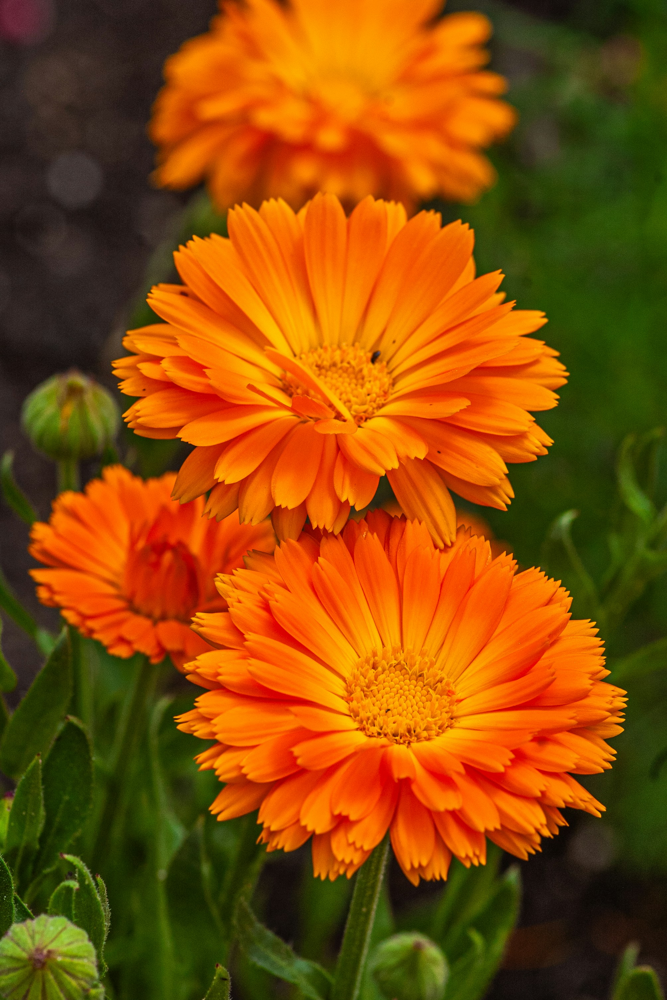

Raíz y tallo
Presenta una raíz principal con ramificaciones laterales. Su tallo es herbáceo y puede desarrollar ramas que sostienen las hojas y los capítulos florales.
BOTÁNICA · AGRONOMÍA
Calendula officinalis L.
Conoce las características, los requerimientos de cultivo y la importancia de una planta reconocida por sus flores amarillas y anaranjadas.
Descubrir la especie ↓
01 · INTRODUCCIÓN
La caléndula, Calendula officinalis L., es una planta herbácea de la familia Asteraceae. Se cultiva principalmente con fines ornamentales y también se aprovecha en productos cosméticos y preparaciones tradicionales.
Su estudio permite conocer aspectos de la morfología vegetal, la propagación por semillas y el manejo de especies cultivadas.
02 · CARACTERÍSTICAS BOTÁNICAS
Las principales características morfológicas de la caléndula.
Presenta una raíz principal con ramificaciones laterales. Su tallo es herbáceo y puede desarrollar ramas que sostienen las hojas y los capítulos florales.
Son hojas simples, generalmente alternas y de forma variable. Su aspecto depende de la posición que ocupan en la planta.
Sus flores se agrupan en capítulos, una estructura típica de las Asteraceae. Presentan tonos amarillos o anaranjados.
Produce frutos secos tipo cipsela, con formas variables. La propagación del cultivo se realiza principalmente mediante semillas.
IDENTIDAD CIENTÍFICA
La caléndula pertenece a la familia Asteraceae, caracterizada por sus inflorescencias en capítulos.
ReinoPlantae
OrdenAsterales
FamiliaAsteraceae
GéneroCalendula
EspecieCalendula officinalis L.
03 · DESARROLLO VEGETAL
De la semilla hasta la formación de nuevas semillas.
La semilla absorbe agua y comienza el desarrollo de la plántula.
Se desarrollan las raíces, los tallos y las hojas.
Aparecen los botones y capítulos florales.
Se forman las cipselas que permiten su reproducción.
La caléndula generalmente se cultiva como anual. La duración de sus etapas depende del ambiente y del manejo.
04 · MANEJO AGRONÓMICO
Los principales factores que favorecen su crecimiento.
Prefiere suelos sueltos, fértiles y con buen drenaje.
Se desarrolla favorablemente con buena exposición solar.
Necesita humedad moderada, evitando el encharcamiento.
Se reproduce principalmente mediante semillas.
Prefiere climas templados, buena iluminación solar y suelos fértiles con buen drenaje. Las condiciones de cultivo deben adaptarse al ambiente de cada región.
05 · SANIDAD Y ECOLOGÍA
Puede ser afectada por pulgones, mosca blanca y enfermedades como el oídio. Una buena ventilación, el control de la humedad y la revisión periódica ayudan a prevenir problemas.
Sus flores proporcionan néctar y polen a diversos insectos polinizadores. También contribuye a la diversidad vegetal de jardines y espacios agrícolas.
06 · APROVECHAMIENTO
Los capítulos florales se recolectan cuando están abiertos y en buenas condiciones. Posteriormente, se secan en un lugar sombreado y ventilado.
Una vez secos, deben almacenarse en recipientes limpios y secos, protegidos de la humedad y la luz directa.
07 · USOS TRADICIONALES
La caléndula se ha utilizado tradicionalmente para el cuidado de la piel. Sus flores contienen compuestos que se investigan por sus propiedades antiinflamatorias y antioxidantes.
Una de sus formas de aprovechamiento es el aceite de caléndula, empleado principalmente de manera tópica.
PREPARACIÓN TRADICIONAL
Es un aceite vegetal en el que se dejan macerar flores secas para extraer parte de sus componentes solubles en aceite.
08 · CONCLUSIÓN
El estudio de Calendula officinalis permite relacionar la identificación botánica con el manejo agronómico. Conocer su morfología, propagación y requerimientos facilita comprender su establecimiento y aprovechamiento responsable.
09 · FUENTES DE INFORMACIÓN
Información científica sobre los usos tradicionales de las flores de Calendula officinalis.
Consultar fuente ↗Información sobre las plantas medicinales, sus aplicaciones y consideraciones de seguridad.
Consultar fuente ↗Guía en español sobre el uso de hierbas medicinales y la evaluación de sus beneficios.
Consultar fuente ↗